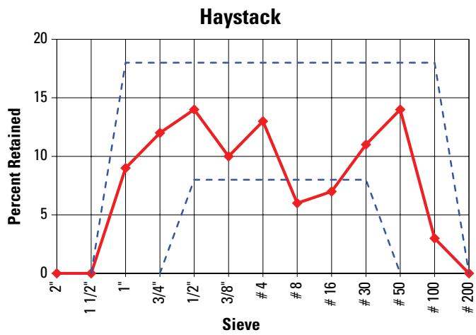
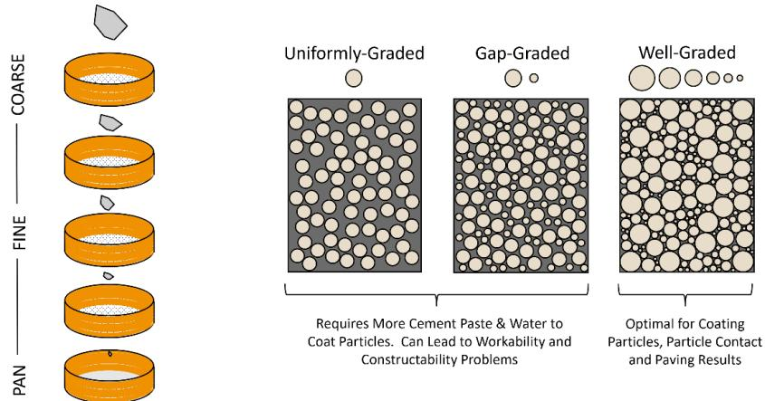

Aggregate Management
Aggregate management is the coordinated oversight of mineral constituents throughout their lifecycle, from extraction and processing to storage and delivery, ensuring they meet defined quality criteria for concrete production. The process involves systematic selection, handling, and control of coarse and fine fractions to maintain consistent grading, particle shape, texture, absorption, and durability within prescribed limits [1] [2]. By optimizing aggregate volume and gradation to maximize stable mineral content while minimizing voids, the approach reduces cement paste demand, thereby limiting shrinkage and chemical deterioration [3]. Effective management integrates moisture conditioning, durability screening for deleterious materials, and uniform stockpile practices to preserve the intended water-cement ratio and prevent segregation or contamination [1] [2]. This holistic control ensures that the bulk of the concrete mixture contributes positively to workability, strength, durability, and economic efficiency across all production stages [1] [3].
Aggregate Management governs the systematic control of mineral constituents to ensure coarse and fine fractions meet specified quality criteria for concrete production. Aggregate Classification establishes the foundational material identity by systematically categorizing concrete aggregates based on their geological origin and physical characteristics to ensure optimal selection for mixture design. Quality Control ensures that coarse aggregates meet specific performance criteria through systematic testing, thereby safeguarding the durability and structural integrity of concrete pavements. Aggregate Impact quantifies the resistance of coarse particles to sudden shock loads, providing a critical metric for selecting durable materials that maintain structural integrity under traffic stresses. Mixture Design optimizes concrete performance and durability by systematically selecting proportions for cement, water, aggregates, and admixtures to satisfy prescribed strength, workability, and economy criteria.
Sources (4)
Sub-concepts (5)
Key findings
- Maximizing the nominal maximum aggregate size within geometric constraints reduced cement paste volume, which curtailed shrinkage and improved freeze-thaw durability [3].
- Well-graded aggregate blends consistently outperformed gap-graded mixes by reducing void space, lowering water demand, curbing shrinkage, and mitigating segregation [1].
- Mineralogical classification alone could not guarantee performance, requiring systematic verification of new sources to identify unsound materials like shale or siltstone [1].
- Angular and rough aggregate textures improved interlock and skid resistance but created harsh mixes that required additional water or admixture adjustments to maintain workability [1].
- Recycled concrete aggregates demanded tighter quality-control regimes due to higher absorption, softness, and potential leaching compared to natural sources [1].
- Maintaining saturated-surface-dry moisture conditions prevented variability in the water-cementitious ratio and preserved concrete durability [1].
- Transportation of aggregates often generated more energy use and greenhouse-gas emissions than extraction, making proximity to batching plants a key sustainability factor [1].
- Conical stockpiles presented the highest segregation risk, necessitating construction in thin layers on stabilized bases to maintain gradation limits [2].
Particle Size Distribution and Grading Optimization
Evidence: 3 reports (3 primary)
Particle size distribution and grading optimization involve selecting a blend of mineral particles that maximizes solid volume while minimizing the voids between them. A well-graded aggregate structure efficiently fills these interstitial spaces, which reduces the quantity of cement paste required to coat the surfaces and fill remaining gaps [3]. This reduction in paste demand directly limits shrinkage potential and enhances resistance to chemical attack and freeze-thaw deterioration by decreasing the volume of the more vulnerable matrix material [3].
The relationship between these aggregate properties is illustrated in the figure below, which plots workability against coarseness.
 Workability factor vs. coarseness factor for combined aggregate [3]
Workability factor vs. coarseness factor for combined aggregate [3]
The figure displays a chart plotting Workability (percent) against Coarseness Factor (percent), divided into five distinct zones labeled I through V. It illustrates the relationship between aggregate gradation and concrete performance, showing how specific combinations of coarseness and workability define different mixture classes (e.g., II-A, II-B) or durability requirements.
Research problem — Research addresses the challenge of optimizing particle size distribution to minimize cement paste volume, thereby reducing shrinkage and extending pavement service life [3]. Investigation focuses on managing uncontrolled variability in aggregate grading and moisture to prevent increased cementitious demand and compromised durability [1]. Study examines the difficulty of maintaining strict gradation limits through blending and storage without segregation or environmental contamination [2].
The following figure illustrates a sample haystack plot to visualize aggregate variability.

Sample Haystack plot [1]A red line with diamond markers indicates the specific particle distribution for a sample, while blue dashed lines represent traditional grading limits that bound the acceptable range of aggregate retention.
State of the art — Current practice prioritizes optimizing particle size distribution to maximize aggregate packing density, which reduces cement paste demand and improves durability by mitigating shrinkage and freeze-thaw damage [3]. Designers routinely employ densification tools such as the Tarantula curve, Power 45 chart, and coarseness/workability factors to generate well-graded skeletons that minimize segregation and lower water-to-cement ratios [1]. The industry standard involves iterative grading adjustments based on performance-engineered mixtures and real-time moisture monitoring to ensure consistent particle packing and constructability under varying environmental conditions [2].
The following figure illustrates how this well-graded distribution enables smaller particles to fill voids between larger ones.
 Well-graded aggregate with a balanced variety of sizes allows smaller particles to fill voids between larger particles, maximizing aggregate volume [1]
Well-graded aggregate with a balanced variety of sizes allows smaller particles to fill voids between larger particles, maximizing aggregate volume [1]
The figure displays three beakers containing coarse aggregates of varying particle size distributions: one with large uniform stones, one with small uniform grains, and one with a mix of both sizes. Below the beakers are graduated cylinders showing that the mixture containing the balanced variety of sizes requires the least amount of water to fill the voids between particles.
Findings from the reports
- Maximizing the nominal maximum aggregate size within geometric constraints reduced cement paste volume, which curtailed shrinkage and improved freeze-thaw durability [3].
- Well-graded aggregate blends consistently outperformed gap-graded mixes by reducing void space, lowering water demand, curbing shrinkage, and mitigating segregation [1].
- Mineralogical classification alone could not guarantee performance, requiring systematic verification of new sources to identify unsound materials like shale or siltstone [1].
- Angular and rough aggregate textures improved interlock and skid resistance but created harsh mixes that required additional water or admixture adjustments to maintain workability [1].
- Recycled concrete aggregates demanded tighter quality-control regimes due to higher absorption, softness, and potential leaching compared to natural sources [1].
- Maintaining saturated-surface-dry moisture conditions prevented variability in the water-cementitious ratio and preserved workability by avoiding unaccounted paste stiffening [1].
- Transportation of aggregates often generated more energy use and greenhouse-gas emissions than extraction, making proximity to batching plants a key sustainability factor [1].
- Conical stockpiles presented the highest segregation risk, necessitating thin-layer construction on stabilized bases to maintain gradation integrity [2].
- A minimum of 120 days was required for sampling, testing, and approving aggregates before proportioning studies could begin due to rigorous durability verification requirements [2].
Novelty & rigor — Novelty lies in operationalizing void-ratio calculations through accessible digital tools that bridge theoretical mixture design with practical aggregate management, thereby optimizing the trade-off between workability and material efficiency [1]. The approach uniquely integrates grading optimization with durability assurance by treating the entire aggregate system as a single control problem, utilizing quantitative factors to steer blends toward ideal envelopes while mitigating long-term performance risks [1]. Reproducibility is ensured through disciplined chains of raw-material selection, precise moisture and grading control, and continuous plant-level monitoring that corrects for variability in real time to maintain consistent batch quality [1] [2].
The following figure illustrates the sequential steps for adjusting concrete mixture proportions as part of this proactive process control strategy.
 Sequential steps for adjusting concrete mixture proportions as part of proactive process control. [2]
Sequential steps for adjusting concrete mixture proportions as part of proactive process control. [2]
The figure displays a four-stage workflow diagram illustrating the progression from initial laboratory design to final production management. The process begins with Laboratory Developed Mixture Design, followed by Contractor Full-Scale Test Batches for validating the mix. Subsequent steps involve a Control Strip or Test Section for fine tuning and conclude with Production managing.
Reported values
| Parameter | Value | Context | Source |
|---|---|---|---|
| bulk volume increase | 10 percent% | for low‑slump concrete (slipform paving) | [1] |
| expansion failure criterion | 0.035 percent% | in 350 freeze-thaw cycles or less for D-cracking susceptibility | [1] |
| fines passing #200 sieve | 10 percent% | limit for untreated bases | [1] |
| fines passing #200 sieve | 35 percent% | for Granular materials in AASHTO Soil Classification Groups A-1, A-2-4, A-2-5, and A-3 | [1] |
| Los Angeles abrasion loss | 50 percent% | loss in the Los Angeles abrasion test (ASTM C131/AASHTO T 96) | [1] |
| maximum coarse-aggregate size | 2.5 in. | general limitation for concrete placement (whichever is less) | [1] |
| profile index (PI) | 10 | for Granular materials in AASHTO Soil Classification Groups A-1, A-2-4, A-2-5, and A-3 | [1] |
| siliceous particle content | 25 percent% | by mass of fine aggregate | [1] |
| Coarseness Factor variability | ±5 | expected change during a paving day quantified by Air Force research in 1996 | [2] |
| fineness modulus limit (lower) | 2.5 | FAA and DOD limit for FM | [2] |
| fineness modulus limit (upper) | 3.4 | FAA and DOD limit for FM | [2] |
| planning lead time | 120 days | minimum recommended for planning the acquisition of aggregates, sampling stockpiles, testing, approval, and performing the study | [2] |
| proportioning study notice period | 21 days | minimum prior to beginning a mixture proportioning study for preliminary proposed items | [2] |
| Workability Factor variability | ±3 | expected change during a paving day quantified by Air Force research in 1996 | [2] |
| intermediate aggregate size for optimized gradation | ~0.33 in. | optimized gradation intermediate size | [3] |
1 more distinct value omitted here; the full span-verified set is in the quantities sidecar.
Across the reviewed reports, optimizing particle size distribution through well-graded blends is consistently identified as a primary mechanism for reducing void space and minimizing cement paste volume, which directly enhances durability by lowering permeability and shrinkage risks. While maximizing aggregate size and achieving optimal grading improve economy and freeze-thaw resistance, these benefits are constrained by geometric limits on nominal maximum size and the trade-offs introduced by angular textures or recycled sources that can impair workability. The collective evidence indicates that maintaining strict control over gradation is critical because deviations from optimal grading or the introduction of blended aggregates increase segregation potential and variability, necessitating rigorous trial batching and continuous quality monitoring to ensure performance. [1] [2] [3]
The following figure illustrates sieve analysis and the basic characteristics of gradations.

Sieve analysis and the basic characteristics of gradations (adapted from ACPA 2015). [2]The figure illustrates a sieve analysis process where aggregate particles are separated by size using stacked screens, resulting in different particle distributions. It visually contrasts three gradation types: uniformly-graded, gap-graded, and well-graded aggregates, showing how the distribution of particle sizes affects void space within a mixture.
Implications — Designers should specify the largest practicable maximum aggregate size within code limits to reduce cement paste demand, thereby lowering shrinkage and enhancing durability against freeze-thaw cycles [3]. Optimizing gradation by incorporating intermediate particle sizes further decreases paste volume, requiring managers to balance these volumetric benefits against potential workability trade-offs during construction [3]. Practitioners must implement continuous monitoring of combined gradation and moisture content to maintain saturated-surface-dry conditions, ensuring that variability in particle size distribution does not compromise the effective water-cement ratio or mix stability [1] [2].
The following figure illustrates how aggregate gradation influences workability relative to paste content.
 Effect of aggregate gradation on workability as a function of paste content [1]
Effect of aggregate gradation on workability as a function of paste content [1]
The figure plots the V-Kelly Index, representing concrete workability, against varying paste contents for three distinct aggregate classifications.
Limitations — Optimizing particle size distribution is constrained by the inherent variability of grading, moisture content, and mineralogy, which complicates the achievement of consistent concrete performance [1]. The effectiveness of grading optimization relies heavily on reliable service records; in their absence, confidence is limited to laboratory testing and trial-batch verification rather than historical precedent [1]. Current practices often lack quantitative thresholds for key performance indicators such as segregation, making decisions regarding particle size and mix behavior subjective and prone to dispute [2].
Aggregate Sourcing, Classification, and Physical Specifications
Evidence: 1 report (1 primary)
Findings from the reports
- Found that aggregate hardness dictates grinding specifications, requiring harder aggregates to use closer blade spacing and higher blade density to achieve a thin land area, while softer aggregates allow for wider spacings [4].
- Observed that this relationship between aggregate hardness and grinding parameters creates a trade-off between achieving the desired surface texture and managing blade selection complexity and wear [4].
- Reported that specifications shifted from explicit land-area measurements to stating the number of blades per unit width, because land-area dimensions are influenced by many uncontrolled factors [4].
Novelty & rigor — The approach introduces a specific construction protocol for aggregate drainage that integrates precise trench geometry, full-encapsulation geotextile lining, and strict lift-size limits to prevent fines migration [4]. Reproducibility is ensured by defining exact excavation dimensions, minimum slope requirements, and a sequential compaction process that allows the procedure to be replicated with standard earth-moving equipment [4].
Implications — Specifications for aggregate sourcing and physical characteristics should prioritize measurable material properties, such as hardness, over abstract geometric metrics to ensure practical enforceability in construction applications [4]. The integration of early-stage material property data into design specifications is essential to balance conceptual simplicity with operational reality, particularly when coordinating aggregate management with broader restoration techniques [4].
Limitations — Physical specifications for aggregate-related surface treatments cannot reliably define exact land-area dimensions due to variability in blade core size, segment width, spacers, wear, and operator control [4]. Consequently, guidance shifts to prescribing the number of blades per unit width rather than exact values, which limits the precision with which surface texture can be controlled [4].
The following figure illustrates the resulting surface texture provided by diamond grinding.
 Surface texture provided by diamond grinding [4]
Surface texture provided by diamond grinding [4]
The figure displays a schematic cross-section of a concrete pavement surface featuring alternating grooves and land areas.
Related concepts
In this hierarchy
- Child: Aggregate Classification
- Child: Aggregate Management
- Child: Quality Control
- Child: Aggregate Impact
- Child: Mixture Design
Related by shared evidence
- Cement Chemistry — shares 4 reports
- Cementitious Materials — shares 4 reports
- Concrete Mixture Design — shares 4 reports
- Concrete Production — shares 4 reports
- Concrete Testing — shares 4 reports
- Cracking Mitigation — shares 4 reports
- Joint Maintenance — shares 4 reports
- Joint Sealing — shares 4 reports
Similar topics
- Aggregate Management
- Aggregate Classification
- Pavement Management
- Pavement Management
- Cracking Mitigation
- Paving Operations
- Concrete Production
- Quality Control
References
- Integrated Materials and Construction Practices for Concrete Pavement: A STATE-OF-THE-PRACTICE MANUAL (2019)
- Best Practices Manual: Quality Control and Quality Acceptance of Concrete Airport Pavement (2025)
- Guide to the Prevention and Restoration of Early Joint Deterioration inConcrete Pavements (2016)
- Concrete Pavement Preservation Guide (Third Edition) (2022)
Feedback on this page